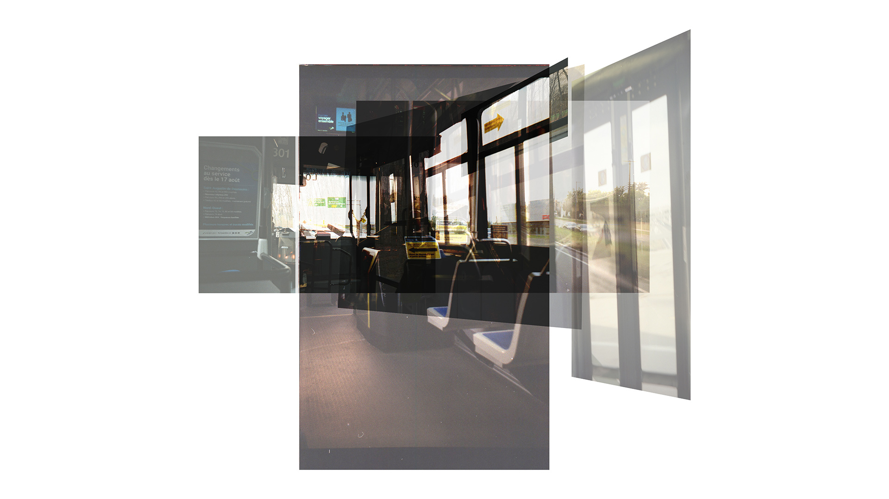
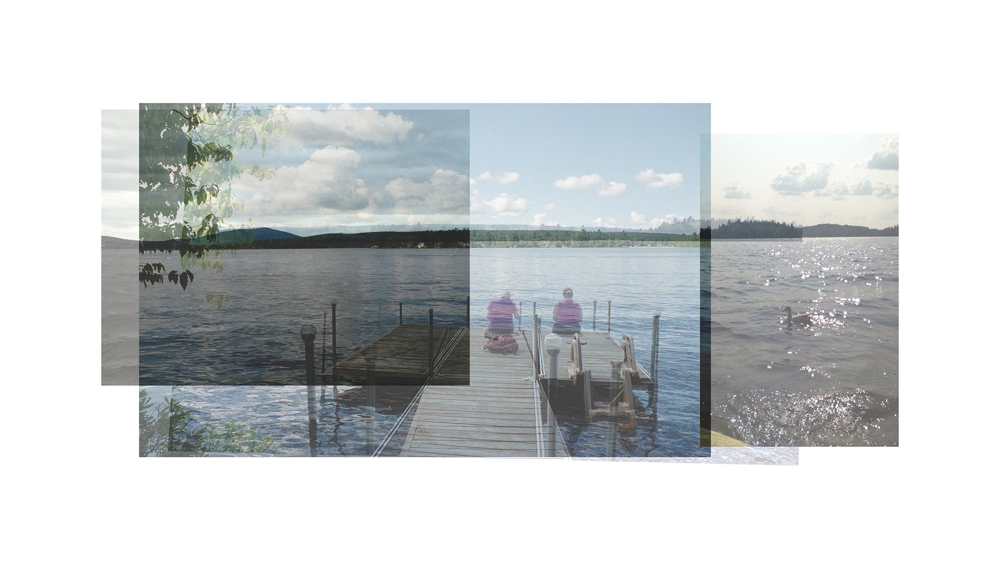
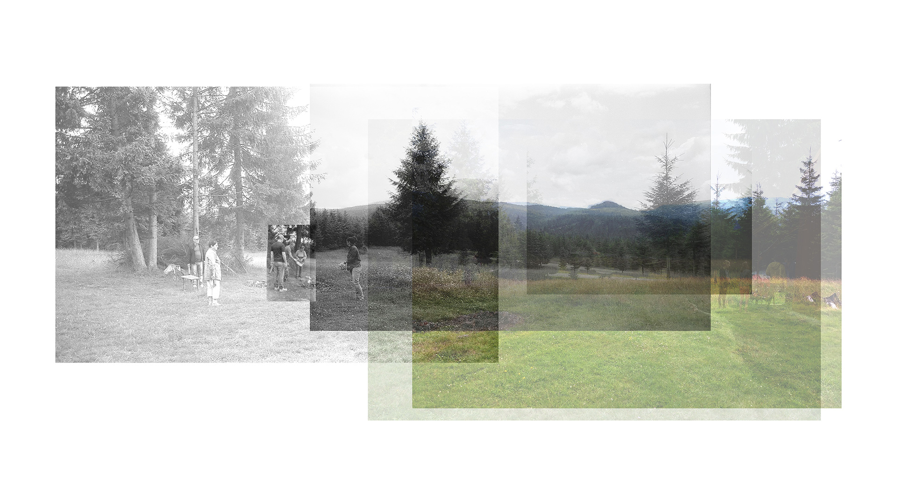

Memories of school
Human memory tends to change over time: every time we try to recall an individual memory, it drifts a little further from the initial experience.
Pictures and videos have the capacity to immortalize moments. However, in doing so, we progressively begin to depend on pictures to remember our favorite memories.
Déjà-vu is an illustration of the power that pictures have in piecing together a portrait or history of a place through their accumulation and juxtaposition.
A portrait of hikes
The many faces of St-Jean street
Evening commutes
Lakeside cottage vignettes
The family's land